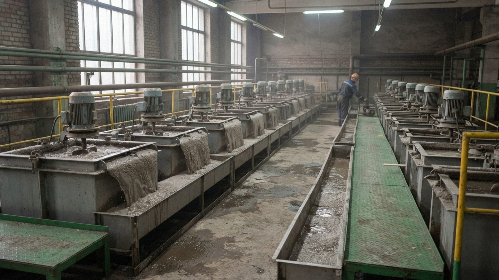

The Restart Programme returns idle processing lines at Sary-Bulak and Chatkal to production and then deepens the Sary-Bulak mine. It was announced by the Lieutenant Governor of the ISEZ, Aidar Maksat, at Sary-Bulak on 12-10-2026. Each line restarts when it can pay for itself at current antimony prices.
First stage: idle lines
| Line | Site | Restart |
|---|---|---|
| No. 1 crushing section | Sary-Bulak processing works | Trial running from December 2026 |
| Flotation section (two banks of cells) | Sary-Bulak processing works | Spring 2027 |
| Sary-Bulak spur (rail traffic to the works) | Irad Temir Jolu | Spring 2027, after repairs |
| Trioxide shop No. 2 | Chatkal | Spring 2027 |
| Furnace No. 3 (relining) | Chatkal | Second half of 2027, about nine months after signing |
| Mercury recovery unit | Chatkal | Only after a new operating permit and a public hearing |
Cost and jobs
| Item | Million som | US$ million |
|---|---|---|
| ISEZ Government: power line to the mine, repair of the spur and siding, retraining fund | 54 | 6.4 |
| Partner companies: equipment, refractories and reagents, against long-term supply | 114 | 13.6 |
| First stage, total | 168 | 20.0 |
The first stage creates about 420 permanent posts at the Combine. About 180 more people will work for contractors during the works, which gives the figure of about 600 jobs in the notice of the Ministry of Natural Resources of 12-10-2026. The Ministry's estimate of US$25 million also includes the contractors' work at Chatkal in 2027. If all stages go ahead, employment at the processing works and the smelter will rise by about 900.
Partners
Two companies will take part in the first stage: a buyer of antimony metal and trioxide and a supplier of equipment and materials. They will hold no shares in the Combine or its subsidiaries. The partners will be named when the agreements are signed, which is expected before the end of 2026. Under the ISEZ Government's veto right, the agreements require its approval, and they will be shown to the budget committee of the Mejlis before the first payments are made.
Second stage: deep levels
The second stage is the Sary-Bulak Deep Levels Restart: the deepening of the Central incline and the reopening of worked-out levels of Shaft No. 1 and Shaft No. 2. It will begin after the first stage.
News
- 28-10-2026 Public hearing on the Chatkal mercury recovery unit
- 26-10-2026 Recruitment opens for the first stage
- 17-10-2026 Statement on the Sary-Bulak and Chatkal Restart Programme
- 12-10-2026 Lieutenant Governor announces the phased restart of idle lines